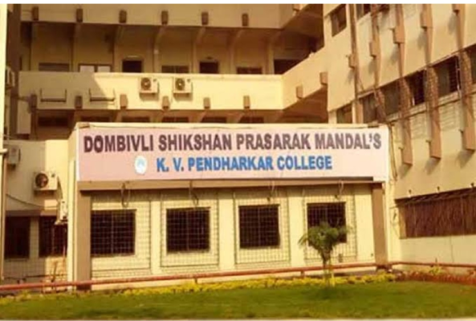

K. V. Pendharkar College
In 1974, foundation stone for the college was laid by eminent personalities like Padma Shri Late Shri. G. D. Madgulkar, the then Adhunik Valmiki of Current era due to his composition of Geet Ramayan and Late Shri. Ajit Wadekar, the then captain of Indian Cricket team. The Mandal is and perennially will remain indebted to the support of many eminent personalities and industrialists such as Late Shri. Gajananrao Pendharkar, the then chairman of Vicco Laboratories who munificently gave a founding donation for the establishment of K. V. Pendharkar College. The College has been named after his father Late Shri. Keshav Vishnu Pendharkar as a gratitude for unstinting support received from Late Shri Gajananrao Pendharkar.


The land to set up the college was allotted by MIDC in 1972. Though, the Mandal had the possession of the land, it took three years to formally start the college. In those times, establishment of a college required permission of the University of Pune and in 1977-78, Dombivli came under the jurisdiction of the University of Pune. This resulted in the delay of establishment of the college. Therefore, the Mandal decided to start Sister Nivedita School first. The school was started in the rental premises at Dombivli East and West, simultaneously.
After receiving necessary approvals, the college began its operations at Bajiprabhu Chowk in Dombivli East. Later, the management of the Mandal shifted the college to Khandelwal tin shade spread over 1000 sq.ft. at Plot No. S. P. 4 in MIDC, Dombivli East.
The K. V. Pendharkar college started functioning from June 1979. The college was also given permanent affiliation by the University of Mumbai on 30th August 1980. Right from its inception, the college has been offering quality education to its students, in accordance with the rules laid down by the University of Mumbai, Government of Maharashtra and University Grants Commission. Of late, the institution underwent the third cycle of assessment by the NAAC (National Assessment and Accreditation Council) and is reaccredited with the coveted 'A Grade' (3.14 CGPA) by the council in 2016-17 (2(f), 12(b) of UGC).
Today, the college offers Under Graduate, Post Graduate as well as Ph.D. programmes across Art, Commerce and Science streams.